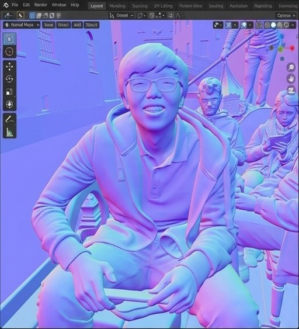
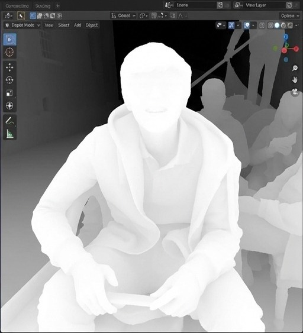
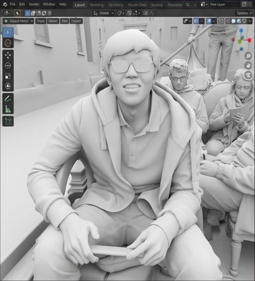
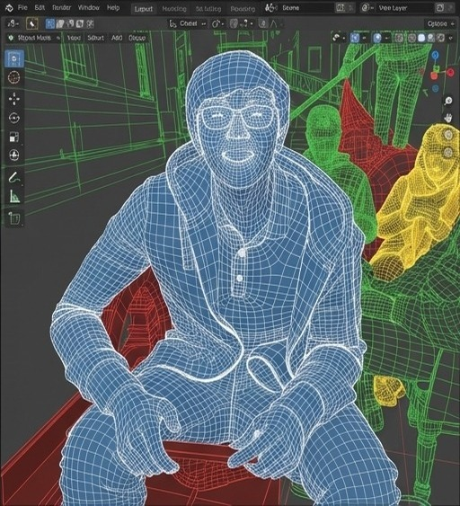

Xintong Han
Computer Vision · Generative AI · 3D Reconstruction
I am a researcher at the Tencent Hunyuan 3D Generation Team. Previously, I was a Senior Tech Lead Manager at Huya Inc (2019-2025) and a Research Scientist at Malong Technologies (2018-2019).
I obtained my Ph.D. from the University of Maryland, College Park, advised by Prof. Larry S. Davis. During my Ph.D., I completed two awesome internships at Google. Prior to that, I received my B.S. degree from Shanghai Jiao Tong University, advised by Prof. Weiyao Lin.
HIRING: Multimodal GenAI Researchers/Interns in Shenzhen/Beijing/Shanghai.
System Log
Apr 2026
Two papers accepted by CVPR 2026: MatPedia & FlashPortrait.
Oct 2025
Will serve as an Area Chair at CVPR 2026.
Jul 2025
Back to working on 3D stuff at Tencent Hunyuan.
Nov 2024
Code released: MotionFollower & StableAnimator.
Jun 2024
MotionEditor accepted by CVPR 2024.
Mar 2023
Cloth4D accepted by CVPR 2023.
Jan 2023
MotionFormer accepted by ICLR 2023.
Oct 2022
FFCLIP accepted as a Spotlight by NeurIPS 2022.
Mar 2022
One paper accepted by CVPR 2022.
Oct 2021
One paper accepted by NeurIPS 2021.
Mar 2021
Four papers accepted by CVPR 2021.
Sep 2020
PGNet accepted by ACCV 2020 as an Oral.
Jul 2020
MakeItTalk accepted by SIGGRAPH Asia 2020.
Nov 2019
Three papers accepted by AAAI 2020.
Aug 2019
Joined Huya Inc. as a computer vision tech lead.
Jun 2019
One oral paper and one poster paper accepted by ICCV 2019.
Mar 2019
One paper accepted by CVPR 2019.
Jul 2018
One paper accepted by ECCV 2018.
Jun 2018
Defended my dissertation!
Feb 2018
Three papers accepted by CVPR 2018.
Selected Publications
2026
2025
Hunyuan3D Studio: End-to-End AI Pipeline for Game-Ready 3D Asset Generation
Arxiv 2025
2023
XFormer: Fast and Accurate Monocular 3D Body Capture
IJCAI 2023
Human MotionFormer: Transferring Human Motions with Vision Transformers
ICLR 2023
2022
2021
Action-guided 3D Human Motion Prediction
NeurIPS 2021
Fine-Grained Shape-Appearance Mutual Learning for Cloth-Changing Person Re-Identification
CVPR 2021
2020
Learning 3D Face Reconstruction with a Pose Guidance Network
MakeItTalk: Speaker-Aware Talking Head Animation
SIGGRAPH Asia 2020
iFAN: Image-Instance Full Alignment Networks for Adaptive Object Detection
AAAI 2020
Channel Interaction Networks for Fine-Grained Image Categorization
AAAI 2020
Generate, Segment and Refine: Towards Generic Manipulation Segmentation
AAAI 2020
2019
2018
DCAN: Dual Channel-wise Alignment Networks for Unsupervised Scene Adaptation
ECCV 2018
NISP: Pruning Networks Using Neuron Importance Score Propagation
2017
Two-Stream Neural Networks for Tampered Face Detection
CVPRW 2017
Son of Zorn's Lemma: Targeted Style Transfer Using Instance-aware Semantic Segmentation
VRFP: On-the-fly Video Retrieval using Web Images and Fast Fisher Vector Products
IEEE TMM 2017
Machine Learning-based Early Termination in Prediction Block Decomposition for VP9
SPIE 2016